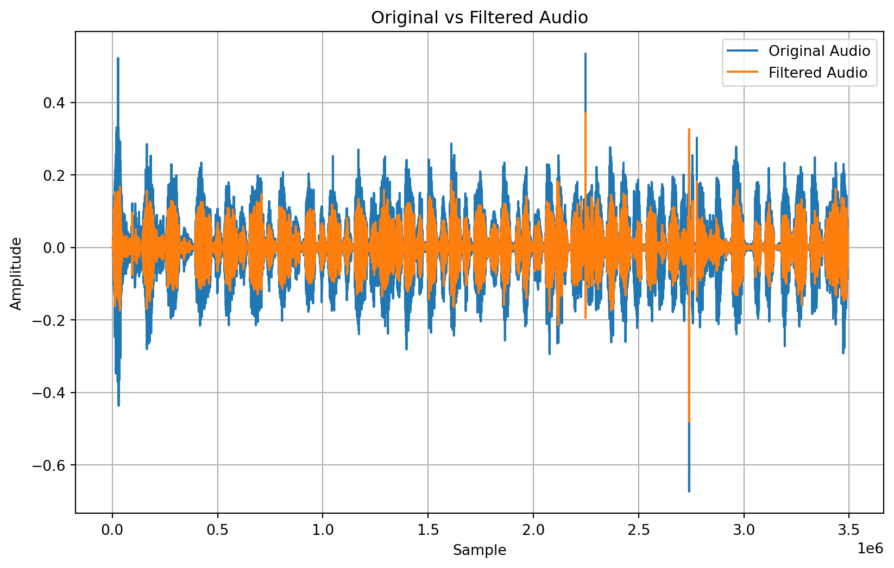

Code
# all imported lib
import numpy as np
import matplotlib.pyplot as plt
import librosa
from scipy.signal import butter, filtfilt
# Load the audio file
audio_path = 'sample1.wav'
y, sr = librosa.load(audio_path)The aim of this study is to analyze breathing patterns using audio data collected through a headset earphone with a strategically placed microphone inside a mask. Our goal is to determine the frequency range of the breathing information and develop a method to count breaths based on the intersection points between filtered and smoothed audio data.
# all imported lib
import numpy as np
import matplotlib.pyplot as plt
import librosa
from scipy.signal import butter, filtfilt
# Load the audio file
audio_path = 'sample1.wav'
y, sr = librosa.load(audio_path)librosa library in Python. This information is crucial for subsequent signal processing steps.print(f"Sample Rate : \033[92m{sr} hz\033[0m \n\n")
print(f"Audio data : \033[92m{y}\033[0m")
# Calculate the duration of the audio in seconds
audio_duration = len(y) / sr
print(f"duration : \033[92m{(audio_duration):.3f} s\033[0m or {int(audio_duration // 60)} min {(audio_duration % 60):.3f} s")Sample Rate : 22050 hz
Audio data : [0. 0. 0. ... 0.03269674 0.0326085 0.02392104]
duration : 158.272 s or 2 min 38.272 sfrom scipy import signal
# Define the cutoff frequency for the low-pass filter (in Hz)
cutoff_frequency = 200 # Adjust as needed
# Normalize the cutoff frequency
normalized_cutoff_frequency = cutoff_frequency / (sr / 2)
# Design the low-pass filter
b, a = signal.butter(4, normalized_cutoff_frequency, btype='low')
# Apply the filter to the audio data
filtered_audio_data = signal.filtfilt(b, a, y)
# Plot original and filtered signals
plt.figure(figsize=(10, 6))
plt.plot(y, label='Original Audio')
plt.plot(filtered_audio_data, label='Filtered Audio')
plt.xlabel('Sample')
plt.ylabel('Amplitude')
plt.title('Original vs Filtered Audio')
plt.legend()
plt.grid(True)
plt.show()
# Design Butterworth low-pass filter
def butter_lowpass(cutoff, fs, order=5):
nyquist = 0.5 * fs
normal_cutoff = cutoff / nyquist
b, a = butter(order, normal_cutoff, btype='low', analog=False)
return b, a
def butter_lowpass_filter(data, cutoff, fs, order=5):
b, a = butter_lowpass(cutoff, fs, order=order)
y = filtfilt(b, a, data)
return y
loudness = librosa.amplitude_to_db(librosa.feature.rms(y=y), ref=np.max)
window_size = 10 # Adjust the window size as needed
loudness_smooth = np.convolve(loudness.squeeze(), np.ones(window_size)/window_size, mode='same')
# Compute the time axis for plotting
time = librosa.times_like(loudness)
# Set filter parameters
cutoff_freq = 200 # 200 Hz
order = 5
# Apply Butterworth low-pass filter
filtered_loudness = butter_lowpass_filter(loudness, cutoff_freq, sr, order=order)
filtered_loudness_smooth = np.convolve(filtered_loudness.squeeze(), np.ones(window_size)/window_size, mode='same')
# Plot original and filtered loudness over time
plt.figure(figsize=(10, 6))
plt.subplot(2, 1, 1)
plt.plot(time, loudness_smooth, label='Original Loudness')
plt.title('Original Audio Loudness Over Time')
plt.xlabel('Time (s)')
plt.ylabel('Loudness')
plt.grid(True)
plt.legend()
plt.subplot(2, 1, 2)
plt.plot(time, filtered_loudness_smooth, label='Filtered Loudness', color='orange')
plt.title('Filtered Audio Loudness Over Time')
plt.xlabel('Time (s)')
plt.ylabel('Loudness')
plt.grid(True)
plt.legend()
plt.tight_layout()
plt.show()# Apply moving average filter to smoothen the loudness data
window_size = 800 # Adjust the window size as needed
loudness_smooth1 = np.convolve(filtered_loudness_smooth.squeeze(), np.ones(window_size)/window_size, mode='same')
# Compute the time axis for plotting
time = librosa.times_like(loudness)
# Plot loudness over time
plt.figure(figsize=(10, 4))
# plt.plot(time, loudness_smooth, color='b')
plt.plot(time, filtered_loudness_smooth , color='r')
plt.plot(time, loudness_smooth1, color='g')
plt.xlabel('Time (s)')
plt.ylabel('Loudness (dB)')
plt.title('Loudness vs Time')
plt.tight_layout()
plt.show()count = 0
for i in range(1,len(time)):
if ((filtered_loudness_smooth[i-1] > loudness_smooth1[i-1] and filtered_loudness_smooth[i] < loudness_smooth1[i] ) or
(filtered_loudness_smooth[i-1] < loudness_smooth1[i-1] and filtered_loudness_smooth[i] > loudness_smooth1[i])):
count += 1
print("number of intersection: ", count)
print("Total Breath count:", count/2)
print(f"Breathing rate : \033[92m{(((count/2)/audio_duration)*60):.2f} Breath/min\033[0m ")number of intersection: 77
Total Breath count: 38.5
Breathing rate : 14.60 Breath/min # Apply Fourier Transform to analyze frequency content
fft_data = np.fft.fft(y)
freqs = np.fft.fftfreq(len(y), 1/sr)
# Plot the magnitude spectrum
plt.figure(figsize=(10, 4))
plt.plot(freqs, np.abs(fft_data))
plt.title('Magnitude Spectrum')
plt.xlabel('Frequency (Hz)')
plt.ylabel('Magnitude')
plt.grid(True)
plt.show()As In the frequency domain, negative frequencies typically represent the same information as positive frequencies due to the complex conjugate symmetry of the Fourier transform of real-valued signals. Therefore, you can consider only the positive frequencies (or the absolute values of frequencies) for analysis.
# Compute the magnitude spectrum using FFT
fft = np.fft.fft(y)
magnitude_spectrum = np.abs(fft)
frequency = np.fft.fftfreq(len(y), 1/sr)
# Plot amplitude versus frequency
plt.figure(figsize=(10, 4))
plt.plot(frequency[:len(frequency)//2], magnitude_spectrum[:len(frequency)//2])
plt.xlabel('Frequency (Hz)')
plt.ylabel('Amplitude')
plt.title('Magnitude Spectrum')
plt.tight_layout()
plt.show()From the graph above, we can estimate that the range of frequencies associated with breath sounds typically falls between approximately 0 Hz to 2000 Hz.
– Loudness vs Frequency vs Time (Spectrogram)
D = librosa.amplitude_to_db(np.abs(librosa.stft(y)), ref=np.max)
# Plot the spectrogram
plt.figure(figsize=(10, 4))
librosa.display.specshow(D, sr=sr, x_axis='time', y_axis='log')
plt.colorbar(format='%+2.0f dB')
plt.title('Spectrogram')
plt.xlabel('Time (s)')
plt.ylabel('Frequency (Hz)')
plt.tight_layout()
plt.show()** When have analyzing clean audio data, the process is straightforward. However, if there is noise or disturbances in the audio, various filters need to be applied for effective analysis.
The analysis revealed that the breathing information predominantly lies within a specific frequency range, as identified through Fourier transform. The method of counting breaths based on intersection points between filtered and smoothed audio data showed promising results, providing a non-invasive and automated approach to monitor breathing patterns. ** We have analyzing clean audio data, the process is straightforward. However, if there is noise or disturbances in the audio, various filters need to be applied for effective analysis.
In conclusion, this study demonstrates the feasibility of analyzing breathing patterns using audio data collected through a headset earphone and a mask. By applying digital signal processing techniques and frequency analysis, we can extract valuable information about breathing behavior. The method of counting breaths based on intersection points between filtered and smoothed audio data offers a practical approach for monitoring breathing patterns in various settings, including healthcare and fitness applications. Further research and validation are warranted to refine the proposed methodology and enhance its accuracy and reliability.